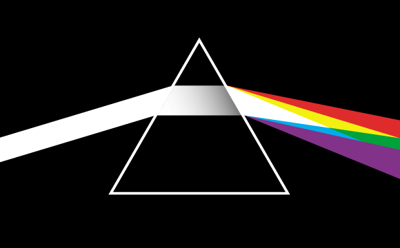

JPG (Joint Photographic Experts Group): Formato de compresión con pérdida (ergo,
que pierde calidad cada vez que se reduce su tamaño),
y eso se aplica tanto a la hora de
la compresión como a la de la descompresión, lo cual genera una pérdida progresiva.
COMPRESIÓN: Está pensado para comprimir imágenes digitales y fotográficas ,debido
a que no pesan demasiado són
de los formatos más usados en Web ya que así facilita la usabilidad.
Da soporte a colores CMYK y RGB y tiene la capacidad
de guardar más de 16 millones de colores distintos.
USO: Su uso se limita a imágenes fotográficas debido a su versatilidad cromática.

PNG (Portable Network Graphics): Formato de compresión sin pérdida, soporta transparencias.
No se suele usar en fotografías, ya que sería un archivo demasiado pesado.
TIPOS: Dentro de los archivos PNG hay una diferenciación PNG 8 y PNG 24:
-PNG 8 : Tiene limitación de colores, no obstante se compensa con su reducido peso.
-PNG 24 : No tiene limitación cromática, pero se hace de notar con su elevado peso.
USO: Su uso se limita a imágenes sin fondo, textos y logotipos debido a su capacidad para transparencias.

GIF: Formato de imágenes en movimiento (o no),
también soporta transparencias y
paletas de 256 colores
por lo tanto difumina el color del original (no genera
distorsiones de imagen).
USO Su uso se limita sobre imágenes con bloques de colores planos, logotipos,
o ilustraciones simples.
